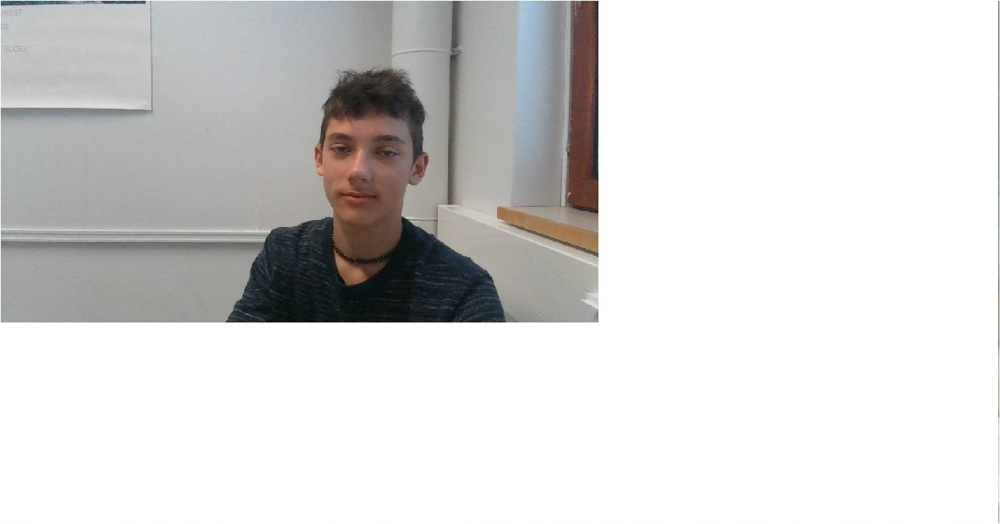

| 1908TiviPa02 |
19 aloitusvuosi
08 aloituskuukausi
Tivi tieto- ja viestintätekniikka
P peruskoulupohjainen
a ryhmä tunnus
02 hepolamminkatu kampus
|
| maanantai | tiistai | keskiviiko | torstai | perjentai | lauantai | sunnuntai |
| päivät | ruuat |
| maanantai | lihapallo |
| tiistai | |
| keskiviiko | ruoka |
| torstai | pizza |
| perjentai | stroganoff |
| lauantai | unimakkara |
| sunnuntai | Grillattu broileri |
|
|
|
|  |
| 1908TiviPa02 |
19 aloitusvuosi
08 aloituskuukausi
Tivi tieto- ja viestintätekniikka
P peruskoulupohjainen
a ryhmä tunnus
02 hepolamminkatu kampus
|
Tähän pitäisi tulla lainausmerkit